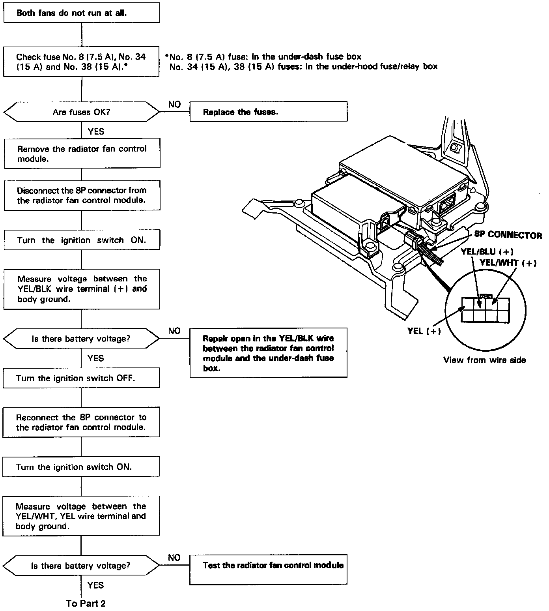
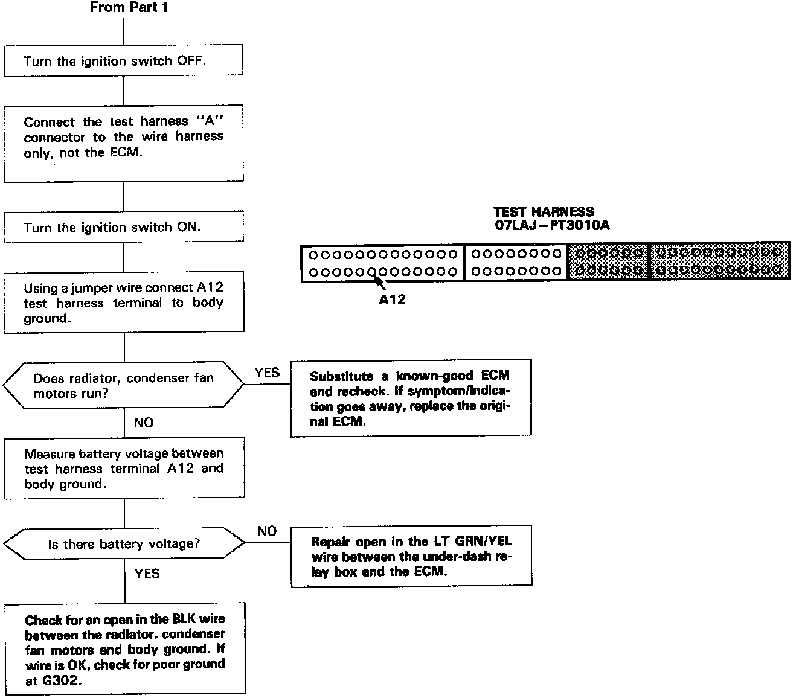

Operation CHARM
: Car repair manuals for everyone.
Home
>>
Acura
>>
1993
>>
Vigor L5-2451cc 2.5L SOHC G25A4 FI
>>
Repair and Diagnosis
>>
Heating and Air Conditioning
>>
Condenser Fan
>>
Testing and Inspection
>>
Non-Trouble Code Procedures
>>
Both Fans Flowchart
Both Fans Flowchart
Both Fans
Part 1:

Part 2:
